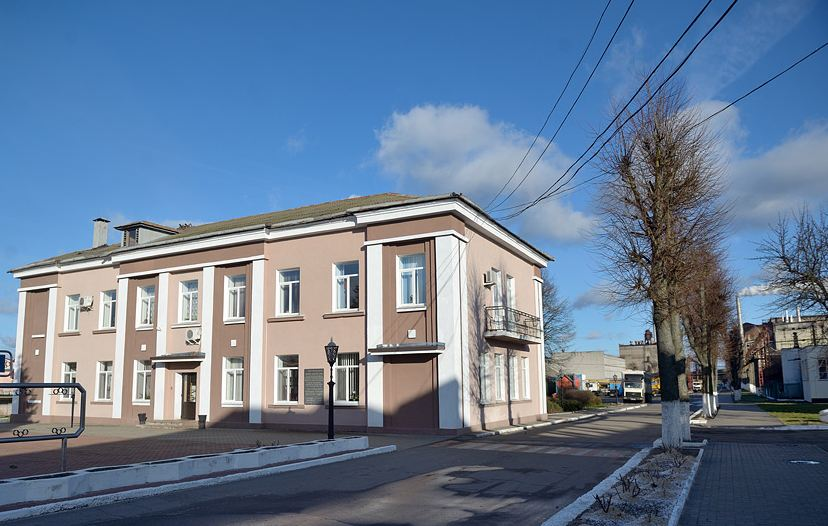

История
Открытое акционерное общество «Бобруйский завод биотехнологий», ранее БРУП «Гидролизный завод», основан в 1936 году и является первенцем микробиологической отрасли Республики Беларусь.
Решение о проектировании и строительстве Бобруйского гидролизно-спиртового завода было принято в мае 1932 г. на первой Всебелорусской конференции по химизации сельского хозяйства. В конце 1934 г. по проекту Гипролесспирта началось его строительство, которое осуществлялось в сложных условиях – на болоте, механизация практически отсутствовала, все работы выполнялись вручную. В апреле 1936 г. завод был построен и сдан в эксплуатацию. В качестве сырья предусматривалось использование отходов лесопиления и деревообработки – щепы и опилок. 1 мая 1936 г. была получена первая продукция – гидролизный этиловый спирт.
В годы Великой Отечественной войны почти все технологическое и силовое оборудование было вывезено в Германию, а оставшееся оборудование и постройки были сожжены и разрушены. Но, благодаря самоотверженному труду людей, завод в короткие сроки был восстановлен. 26 октября 1947 г., впервые после окончания войны, была получена готовая продукция. В послевоенные годы завод наращивал производственные мощности и решал сложные задачи по комплексному использованию сырья.
В 60-е годы началось техническое перевооружение завода, расширение производства, освоение новых видов продукции. В 1961 г. сдается в эксплуатацию цех по производству жидкой углекислоты, которая находит широкое применение при производстве электросварочных работ, газированных напитков, для заполнения средств пожаротушения. В середине шестидесятых годов перед отраслью поставлена задача укрепления кормовой базы животноводства кормовым белком и витаминами.
С 1965 по 1967 годы по проекту Южгипробиосинтеза идет реконструкция завода и строительство цеха по производству кормовых дрожжей проектной мощностью 8,4 тыс. тонн в год. В ходе реконструкции были построены: новый склад сырья, новый материальный склад и склад дрожжей, участок приготовления известкового молока и раствора питательных солей, мастерские КИП и электроучастка, две артезианские скважины, проведена реконструкция железнодорожной ветки.
В 1967 г. был сдан в эксплуатацию дрожжевой цех, проектная мощность которого была освоена уже в 1974 году. В этом же году на заводе организовано производство кормовых дрожжей, обогащенных лизином.
С 1976 г. освоен выпуск дрожжей, обогащенных витамином Д2. Дальнейшее наращивание производства кормовых дрожжей, используемых в качестве добавок в рационы скота, свиней, птиц, пушных зверей, позволило решить проблему дефицита кормового белка в республике.
В 1973 г. проведена реконструкция ректификационного отделения с целью перехода на выпуск спирта этилового ректификованного технического высшей очистки. 4 мая 1976 г. этой продукции присвоен Государственный Знак качества.
С первых лет существования предприятия непрерывно велись работы по защите окружающей среды: по снижению выбросов в атмосферу, по совершенствованию очистки сточных вод, по утилизации промышленных отходов. Для очистки концентрированных промстоков (последрожжевой бражки) построены и в январе 1979 г. сданы в эксплуатацию локальные очистные сооружения. С помощью биологической очистки стоков удалось снизить их загрязненность на 43-45%, а часть условно-чистых вод использовать в оборотном водоснабжении на технологические нужды.
Тесное сотрудничество с учеными различных научно-исследовательских институтов в течение многих лет дало возможность внедрить ряд мероприятий по совершенствованию и автоматизации процесса гидролиза, совершенствованию технологии выращивания и сушки кормовых дрожжей, повышению качества углекислоты, позволило освоить выпуск совершенно новой продукции.
В 1985 г. был сдан в эксплуатацию участок по выращиванию женьшеня – биологически активного препарата. 20%-й настой женьшеня, выпускаемый заводом, нашел применение в парфюмерно-косметической промышленности, в производстве товаров бытовой химии, а 40%-й настой – в медицине в качестве стимулирующего и общеукрепительного средства.
С целью увеличения выпуска товаров народного потребления в 1991 г. введен в эксплуатацию участок по производству пеномоющих средств, лосьона косметического, крема защитно-питательного для рук, одеколона.
В 1993 г. предприятием освоена технология выращивания грибов вешенка.
В 1994 г. построен и введен в эксплуатацию цех ректификации, который позволяет оказывать услуги по ректификации спирта-сырца с получением спирта-ректификата.
Внедрен ряд мероприятий и рацпредложений, направленных на снижение себестоимости продукции, экономию энергоресурсов. Так в 1995 г. была построена собственная котельная, обеспечивающая паром производство. Осуществлен перевод котельной и сушильных установок предприятия с мазута на природный газ. В том же 1995 г. была освоена технология производства спирта этилового ректификованного технического из нетрадиционного для гидролизной промышленности сырья — фракции головной этилового спирта и мелассы.
В 1998 г. введен в эксплуатацию опытно-промышленный участок по производству ветеринарного препарата «Сублицин», средств защиты растений «Бактоген», биопрепаратов «Ризобактаген-С», «Фитостимофос», «Миколин».
В мае 2001 г. принят на баланс предприятия опытно-промышленный участок (п.Туголица) по производству брикетов топливных. Сырьем для данного производства является отход гидролизного производства – лигнин.
В августе 2001 г. введен в эксплуатацию 1 пусковой комплекс цеха по производству спирта этилового ректификованного из пищевого сырья (зерна и спирта-сырца). В декабре 2002 г. введен в эксплуатацию 2 пусковой комплекс цеха.
В 2004 г. освоена технология производства твердой углекислоты.
С января 2004 г. на предприятии внедрена и функционирует система менеджмента качества, соответствующая требованиям СТБ ИСО 9001-2001, а с декабря 2005 г. – система управления окружающей средой, соответствующая требованиям СТБ ИСО 14001-2005.
В декабре 2005 г. введен в эксплуатацию участок по производству дезинфицирующих и спиртосодержащих растворов, в котором освоен выпуск автомобильных стеклоомывателей серии «Кругозор».
В 2008 г. разработана нормативно-техническая документация и начато производство жидкости охлаждающей низкозамерзающей «Айсберг-40» (антифриз), для автомобильных систем охлаждения.
В 2013 году предприятие было переименовано в «Бобруйский завод биотехнологий» с сохранением организационно-правовой формы.
С 2020 г. налажен выпуск геля «Чистые ручки», предназначенного для очистки рук без использования воды. Гель представляет собой однородную гелеобразную массу, содержит спирт этиловый (65% объемная доля) и глицерин.